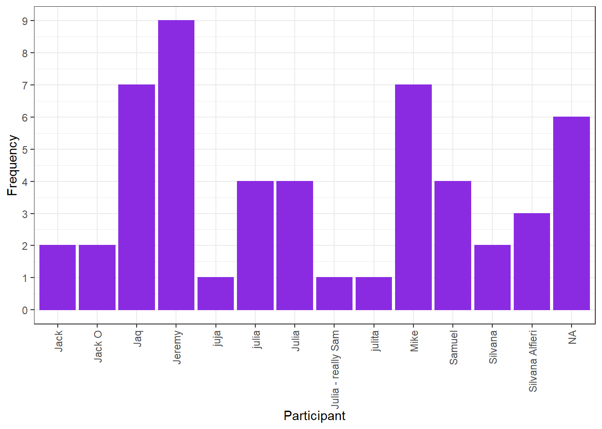

Tour de Fry 2021 Results
On July 13th, 7 brave souls embarked on a journey across Raleigh towards potato heaven: the Tour de Fry. Fries were got, bikes and Jacks were lost, and Mike (the original bike) showed up. All in a day’s effort to determine the best fries in Raleigh (okay we did miss quite a few key restaurants but we’ll get it next time).
Participants
One thing is for certain, nobody knows how to spell their name.

Overall Results
Rating their overall fry experience, Mike’s Bikers have determined their favorite french fry in Raleigh. Sort’ve.

We know for a scientific fact that Snoopy’s fries are awful. Arby’s led to the most confusion, probably because of the questionable cheese dip and unnamed flavor. It would also seem people really like MoJoe’s, Popeye’s, and Raleigh Beer Garden, with Raleigh Beer Garden at the top!
Let’s Break it Down
Take a peek at how each restaraunt holds up for each criteria.